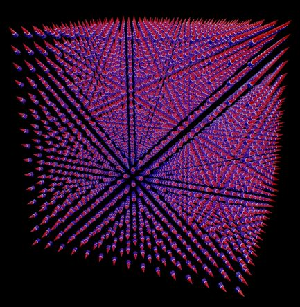
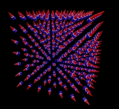

TABLE OF CONTENTS
- 1. ScPovPlot3D/VectorField.inc
- 1.1. VectorField.inc/ComputeStreamline
- 1.2. VectorField.inc/DrawPathLines
- 1.3. VectorField.inc/DrawStreamLines
- 1.4. VectorField.inc/MakeSpline
- 1.5. VectorField.inc/MakeSplineV
- 1.6. VectorField.inc/VectorCF
- 1.7. VectorField.inc/DeclareVectors
- 1.8. VectorField.inc/_Npmax, _StrmLinRadius, _EndingPointRad, _FatCoefficient, _Flux, __1byPi__
- 2. Potential.inc/DeclareStructure
ScPovPlot3D/VectorField.inc [ Modules ]
PURPOSE
This module is in introductory state. It contains macros for representation of vector field in form of set of vectors symbolised by various shapes and color coding systems. Direction and strength of vector at given space point can be visualised in different ways. While direction of the vector can be shown by main axis of some figure, for example cone or cylinder, strength and turn can be represented by length or color or volume or so on. It depends mainly on the goal of visualisation. I think, that representation of vectors in single plane is most informative by now. Besides that we need superimposition of source objects, as coils, charges, permanent magnet poles or even oceanic bed if one takes into account visualisation of oceanic currents.

Fig.[VectorField] Example of vector field generated by point charge at the center of Cartesian system rendered with this module
VERSION
3.1.0.6, tested on PovRay 3.7.
AUTHOR
Janusz Opi쓰 Ph.D.
jmo{at}agh.edu.pl, janusz.opila{at}gmail.com Dept. of Applied Informatics, https://www.facebook.com/KatedraInformatykiStosowanejWZAGH/ http://kis.zarz.agh.edu.pl/ AGH University of Science & Technology, Cracow, Poland http://www.zarz.agh.edu.pl/English/index.asp Maintained by Janusz Opi쓰 Ph.D. Homepage: http://scpovplot3d.sourceforge.netCOPYRIGHT
GNU GPL v.3 License (c) 2012-now by Janusz Opi쓰 Ph.D. AGH University of Science and Technology
Potential.inc/DeclareStructure [ Main macros ]
[ Top ] [ Potential.inc ] [ Main macros ]
PURPOSE
Sets internal variable _Pts, utilized by VectoCF macro for vector field computations
SYNOPSIS
#macro DeclareStructure (_Atoms)INPUTS
garray - structure table, see Potential.incOUTPUTS
None, sets global variableSIDE EFFECTS
affect global variable _Pts, which is input to Potential.CreateV### Function factory macros
SEE ALSO
VectorCF (), ComputeStreamline ()
VectorField.inc/ComputeStreamline [ Main macros ]
[ Top ] [ VectorField.inc ] [ Main macros ]
PURPOSE
this macro computes nodes of single streamline only, for given line index _Lnum, using Runge-Kutta 4th order algorithm based on data provided by DeclareStructure () macro Radius of the streamlines is governed by internal global variable _StrmLinRadius. _FatCoefficient is being used by ComputeFatStreamline macro variant of ComputeStreamline. Moderates scaling of the field strength Until _StrmLinRadius>0 then constant value (_StrmLinRadius) is used. If opposite is true, dynamic scaling is activated.
SYNOPSIS
#macro ComputeStreamline(_P0, _Npts, _Lnum)INPUTS
3Dvector _P0 - 3D Start space point, units - [A] integer _Npts - expected (maximum) number of nodes, integer _Lnum - streamline index.SIDE EFFECTS
Radius of the streamlines is governed by internal global variable _StrmLinRadius. Radius of the streamlines may depend on field strength so scaling factor _FatCoefficient as internal global var. is required. Computed line is stored in global variable StrmLineTable[][][] which must be defined BEFORE macro is called.
SEE ALSO
VectorField.inc/DrawStreamLines [ Main macros ]
[ Top ] [ VectorField.inc ] [ Main macros ]
PURPOSE
Draws streamlines based on Streamline table _SL, spline type _splt and texture _txt. Uses _EndingPointRad internal global variable
SYNOPSIS
#macro DrawStreamLines ( _SL, _splt, _txt )// - table, spline, textureINPUTS
garray _SL - streamlines table over N lines over N_i nodes integer _splt - interpolation type: 2 - bezier spline, 3 - cubic spline, other - linear_spline texturedef _txt - texture attached to ALL lines, may be simple or complex, ex. functionalSIDE EFFECTS
Uses _EndingPointRad internal global variable, governing radius of extreme points.
SEE ALSO
VectorField.inc/VectorCF [ Main macros ]
[ Top ] [ VectorField.inc ] [ Main macros ]
PURPOSE
computes Coulomb vector field from assembly of charged molecules, passed as global array _Pts[][]
SYNOPSIS
#macro VectorCF ( _rr, _sc )INPUTS
3Dvector _rr - 3D space point, units - [A] float _sc - additional scaling factor, may be left _sc==1 garray _PTs - array[N+1][8] of charges, passed as global variable, use macro DeclareStructure (Any_Set_of_Atoms), refer Structures.inc and Potential.inc for detailsOUTPUTS
Coulomb electric field vector in [V/Angstrem], governed by "qeff" factor defined in Potential.inc fileSEE ALSO
DrawStreamLines, ComputeStreamline, Potential.inc
VectorField.inc/DeclareVectors [ Helper macros ]
[ Top ] [ VectorField.inc ] [ Helper macros ]
PURPOSE
calculates field using Function _VS given as parameter, in _NP^3 grid points in a cube

Fig.[VectorFieldCube] Example of vector field generated by point charge at the center of Cartesian system rendered with this module over 7x7x7 3D space gridSYNOPSIS
#macro DeclareVectors (_VS, _NP)INPUTS
_VS - float Function(float, float) - inline Function two float parameters, returns float _NP - integer - size of the grid, number of nodes along one cube edge
VectorField.inc/_Npmax, _StrmLinRadius, _EndingPointRad, _FatCoefficient, _Flux, __1byPi__ [ Variables ]
[ Top ] [ VectorField.inc ] [ Variables ]
PURPOSE
_StrmLinRadius - streamline body radius _EndingPointRad - streamline endings (spheres) diameter, internal global variable _FatCoefficient - used by ComputeFatStreamline macro variant of ComputeStreamline. Moderates scaling of the field strength _Flux - assumed vector field flux along tubeline
SYNOPSIS
#declare _Npmax = 1; #declare _StrmLinRadius = 0.03; // streamline body radius, if == '0', _FatCoefficient is used for variable diameter streamlines. #declare _EndingPointRad = 0.05; // streamline endings (spheres) diameter, internal global variable #declare _Flux = 1.00; // vextor field flux, expressed in adopted in the job units, eg. [T*m^2], [V*angstroem], and so on. #declare _FatCoefficient = 1.00; // used by ComputeStreamline. Additional scaling of the fluxline diameter, for use with // derivative units like V->kV, A/m=>kA/m; #declare __1byPi__ = 1.0/sqrt(pi); // remove? - constant coefficient for fluxlines;SEE ALSO
One should also refer to:
None